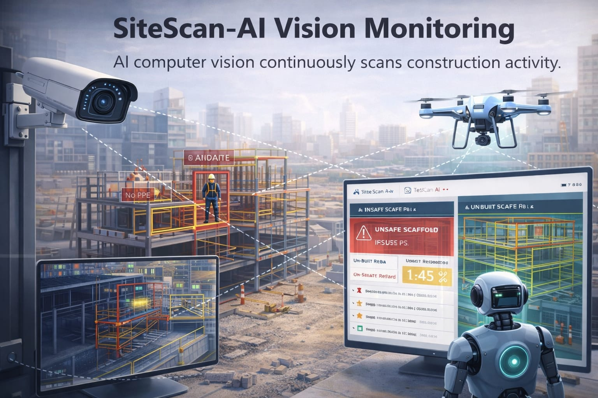
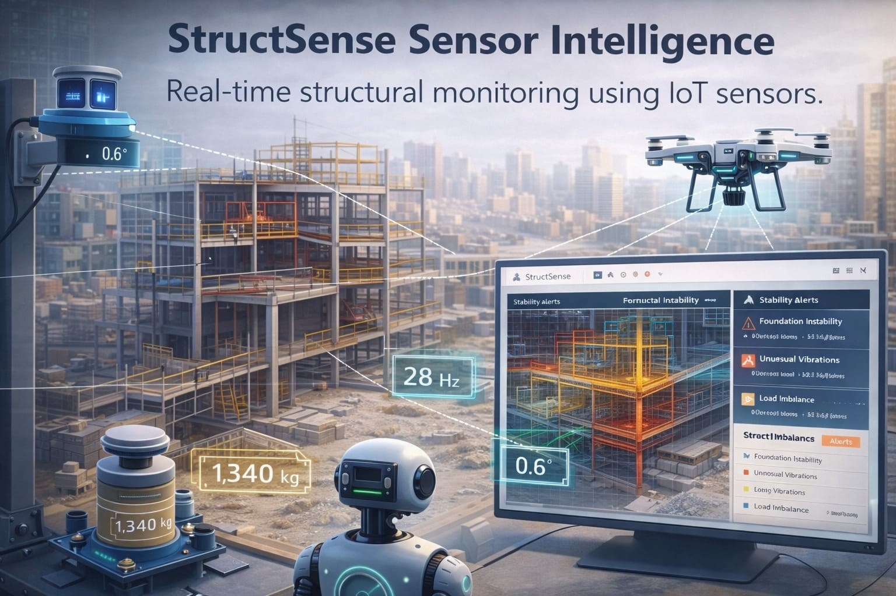
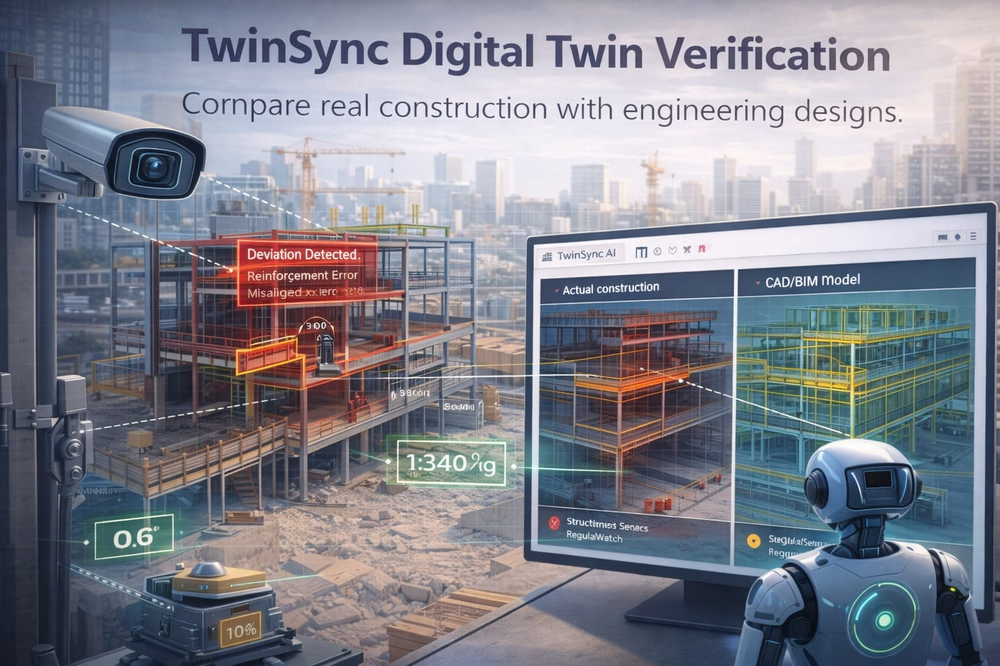
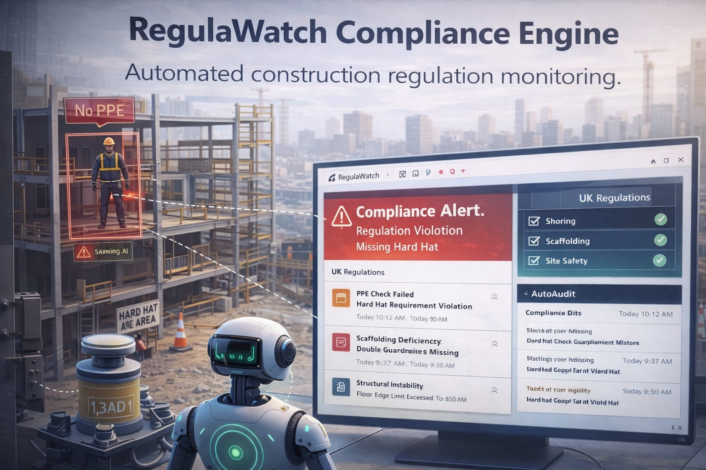
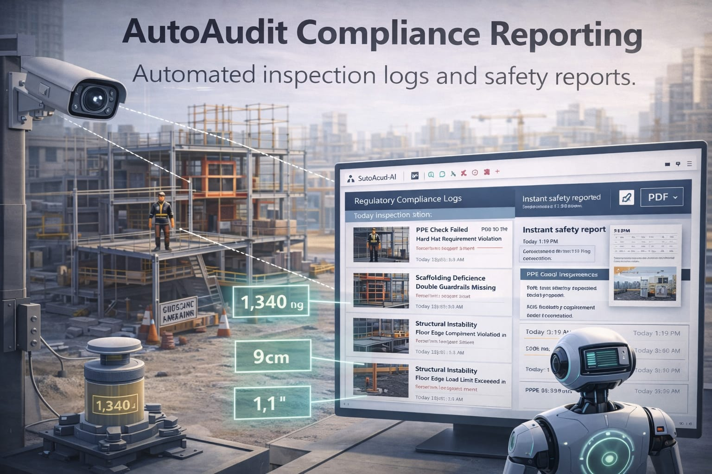

CraftOptics AI Platform
CraftOptics AI is a cyber-physical construction intelligence platform that combines computer vision, IoT telemetry and digital twin verification to monitor construction sites, detect structural risks and automate regulatory compliance in real time.

SiteScan-AI Vision Monitoring
AI computer vision continuously scans construction activity.
SiteScan-AI analyzes camera and drone footage to detect structural deviations, unsafe behavior and installation errors. The system automatically identifies issues such as missing PPE, incorrect reinforcement placement or unsafe scaffolding conditions.

StructSense Sensor Intelligence
Real-time structural monitoring using IoT sensors.
StructSense processes data from tilt meters, vibration sensors and load cells embedded in the construction site. The system detects foundation instability, abnormal vibration patterns and early structural stress signals before visible damage occurs.

TwinSync Digital Twin Verification
Compare real construction with engineering designs.
TwinSync overlays real-time site imagery with CAD/BIM models to verify that the structure being built matches the original engineering specifications. Deviations are detected instantly, preventing costly rework and structural errors.

RegulaWatch Compliance Engine
Automated construction regulation monitoring.
RegulaWatch digitizes UK building regulations and safety standards into machine-interpretable rules. The system continuously audits construction activity and generates alerts when compliance thresholds are violated.

Predictive Risk Analytics
Forecast structural risks before failure occurs.
Using historical sensor data and AI models, CraftOptics predicts structural stress, settlement shifts and safety risks before they become visible defects. Engineers receive proactive alerts and mitigation recommendations.

AutoAudit Compliance Reporting
Automated inspection logs and safety reports.
AutoAudit generates time-stamped compliance documentation for regulators, auditors and project stakeholders. Inspection reports are automatically created from real monitoring data, eliminating manual paperwork.